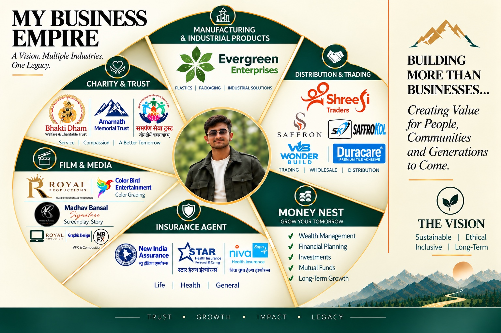

2023 · Short film
Patange
Editing and visual effects credits.
View credits ↗Indian film editor, visual effects artist, screenwriter and author. Exploring stories through images, editing and the written word.
Madhav Bansal works across film editing, visual effects, screenwriting and independent publishing. His screen credits include the Indian series Who's Your Daddy? (2020) and the short film Patange (2023). His writing spans screenplays, theatre and books exploring technology and ideas.
This professional profile intentionally omits private addresses, contact details and personal identifiers.
Editing and visual effects credits.
View credits ↗Assistant editing credit.
View TV credits ↗Screenwriting project listed on FilmFreeway.
View portfolio ↗Screenwriting project listed on FilmFreeway.
View portfolio ↗Published theatrical writing. ISBN 9781689535953.
Goodreads listing ↗A publication about artificial intelligence and its implications. ISBN 9798871106976.
Publisher listing ↗Film and entertainment remain my principal professional focus. My broader portfolio also spans manufacturing, trading, financial services, insurance and community initiatives. The brands below are featured in my business portfolio; individual roles and legal affiliations may vary.

Royal Productions, Color Bird Entertainment, Madhav Bansal Signature; screenplay, editing, colour grading, graphics, VFX and compositing.
Evergreen Enterprises — plastics, packaging and industrial solutions.
Shree Ji Traders, Saffron, Saffrokol, Wonder Build and Duracare are featured in the portfolio.
Financial planning, investment-related services and life, health and general insurance activities.
Bhakti Dham Welfare & Charitable Trust, Amarnath Memorial Trust and Samarpan Seva Trust.
Explore credits, projects and publications across the following public profiles and catalogues.